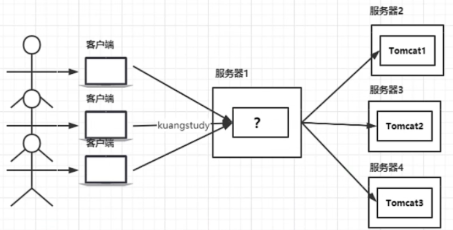
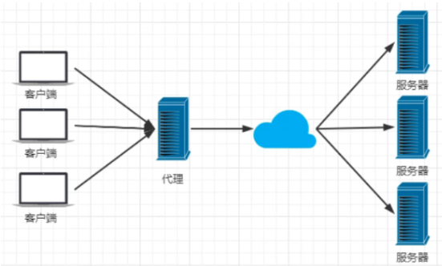
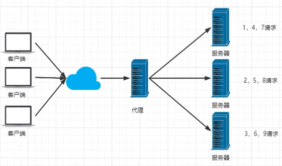
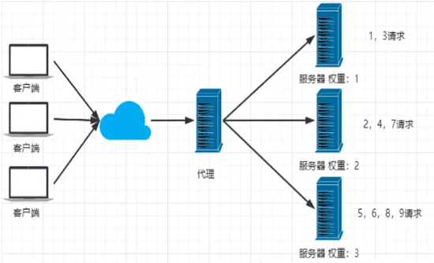
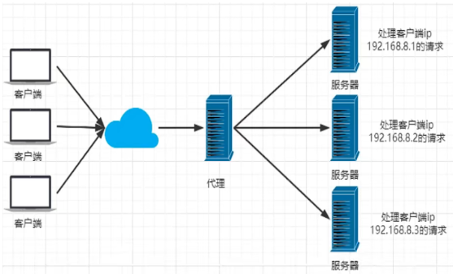
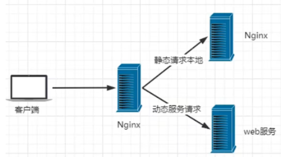
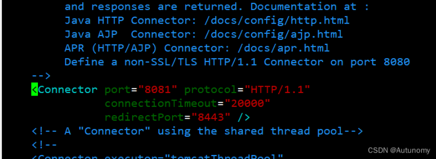
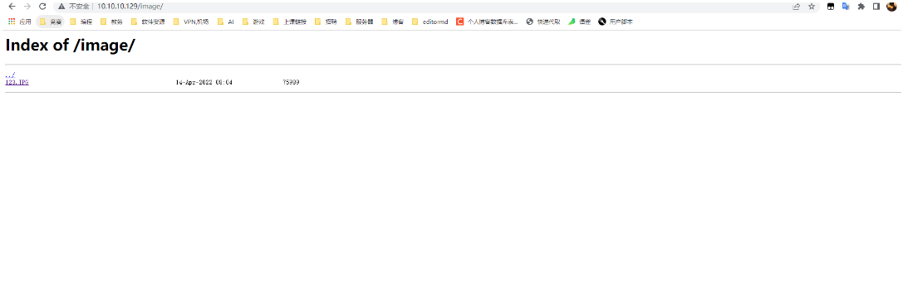
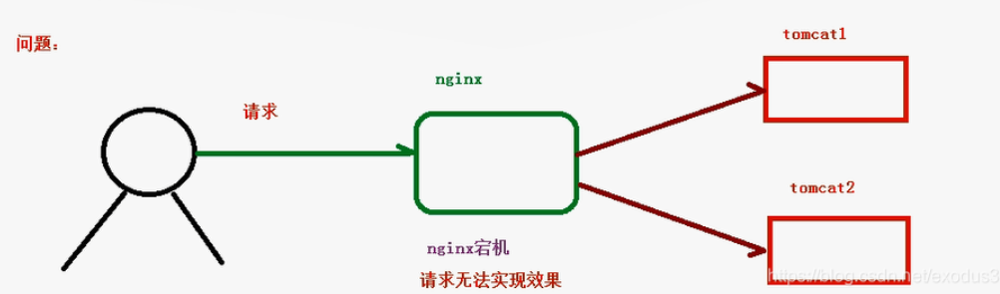
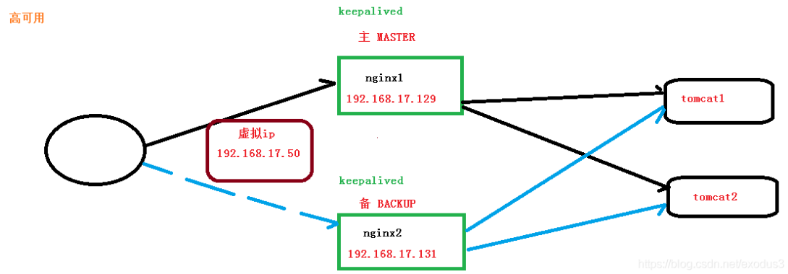

Nginx
Nginx
简介:
Nginx (engine x) 是一个高性能的HTTP和反向代理web服务器，同时也提供了IMAP/POP3/SMTP服务。
其特点是占有内存少，并发能力强，事实上nginx的并发能力在同类型的网页服务器中表现较好，中国大陆使用nginx网站用户有：百度、京东、新浪、网易、腾讯、淘宝等。在全球活跃的网站中有12.18%的使用比率，大约为2220万个网站。
Nginx 是一个安装非常的简单、配置文件非常简洁（还能够支持perl语法）、Bug非常少的服务。Nginx 启动特别容易，并且几乎可以做到7*24不间断运行，即使运行数个月也不需要重新启动。你还能够不间断服务的情况下进行软件版本的升级。
Nginx代码完全用C语言从头写成。官方数据测试表明能够支持高达 50,000 个并发连接数的响应。
Nginx产生
一个公司的项目刚刚上线的时候，并发量小，用户使用的少，所以在低并发的情况下，一个 jar 包启动应用就够了，然后内部 tomcat 返回内容给用户
慢慢的，使用平台的用户越来越多了，并发量慢慢增大了，这时候一台服务器满足不了我们的需求了
于是我们横向扩展，又增加了服务器。这个时候几个项目启动在不同的服务器上，用户要访问，就需要增加一个代理服务器了，通过代理服务器来帮我们转发和处理请求。

我们希望这个代理服务器可以帮助我们接收用户的请求，然后将用户的请求按照规则帮我们转发到不同的服务器节点之上。这个过程用户是无感知的，用户并不知道是哪个服务器返回的结果，我们还希望他可以按照服务器的性能提供不同的权重选择。保证最佳体验！所以我们使用了Nginx。
作用
Http代理，反向代理：作为web服务器最常用的功能之一，尤其是反向代理。
代理分为正向代理和反向代理:
正向代理：代理客户端

反向代理 ：代理服务端
所以用户是无感知的，比如，百度的服务器是在不同的服务器上，我们只需要搜索 baidu.com 就行。
负载均衡策略
Nginx提供的负载均衡策略有2种：内置策略和扩展策略。内置策略为轮询，加权轮询，ip hash。扩展策略,即自定义策略
内置策略:
**轮询: **
每个请求按时间顺序分配到不同的后端服务器，如果服务器down掉，能自动剔除

加权轮询:
通过给服务增加权重来决定具体请求服务器

ip Hash:
对客户端请求的 ip 进行 hash 操作，然后根据 hash 结果决定请求分发给哪一台服务器进行处理，可以解决 session 不共享的问题(只要客户端IP不变,每次请求的都是同一个台服务器)

fair(第三方):
按后端服务器的响应时间来分配请求，响应时间短的优先分配
动静分离:
Nginx可以将我们的请求的资源根据静态资源(图片,js,css等资源)还是动态资源(后端接口)进行区分:
静态资源直接请求Nginx, 动态资源再请求服务器

Nginx安装
windos下:
直接下载安装即可
Linux
发行版: CentOS 7
准备工作:
1 | # 关闭并精用防火墙 |
Nginx相关命令
1 | whereis nginx # 查找安装路径 |
配置文件
Linux版本的配置文件: /etc/nginx/nginx.conf
默认配置信息: /etc/nginx/conf.d/default.conf
配置文件详解
由三部分组成
全局块
从配置文件开始到events块之间的内容，主要会设置一些影响nginx服务器整体运行的配置指令，主要包括配置运行Nginx服务器的用户组，允许生成的worker process数，进程PID存放路径，日志存放路径和类型以及配置文件的引入等
第二部分 events块
events块涉及的指令主要影响Nginx服务器与用户的网络连接，这部分的配置对Nginx的性能影响较大，在实际中应该灵活配置
第三部分 http块
Nginx服务器配置中最频繁的部分，http块也可以包括http全局块、server块
http全局块:
http全局块配置的指令包括文件引入、MIME-TYPE定义，日志自定义，连接超时时间、单链接请求数上限等
server块:
这块和虚拟主机有密切关系，虚拟主机从用户角度看，和一台独立的硬件主机是完全一样的，该技术的产生是为了节省互联网服务器硬件成本
每个http块可以包括多个srever块，而每个server块就相当于一个虚拟主机，而每个server也分为全局server块以及可以同时包含多个location块
- 全局server块:最常见的配置时本虚拟机主机的监听配置和本虚拟机主机的名称或IP配置
- location块: 一个server块可以配置多个location块，这块的作用是基于nginx服务器接收到的请求字符串，对虚拟注解名称之外的字符串进行匹配，对特定的请求进行处理，地址定向、数据缓存和应答控制等功能，还有许多第三方模块的配置也在这里进行
文件内容
1 |
|
默认情况下,/etc/nginx/conf.d/*.conf只有一个默认配置文件default.conf,内容如下:
1 | server { |
配置实例
配置实例-反向代理
案例一:
实现效果：打开浏览器，在浏览器地址栏输入地址www.123.com，跳转Linux系统tomcat主页面中
准备工作：在linux中安装tomcat, 并启动tomcat
具体实现：在windows的host文件中加入 装有nginx虚拟机ip www.123.com
nginx也修改配置文件添加配置:
1 | http { |
案例二:
实现效果：使用nginx反向代理，根据访问的路径跳转到不同端口的服务中，nginx监听端口为9001
访问 http://127.0.0.1:9001/edu/ 直接跳转到127.0.0.1:8080
访问 http://127.0.0.1:9001/vod/ 直接跳转到127.0.0.1:8081
具体实现:弄两个tomcat并修改它们的配置文件中的监听端口号分别为: 8080, 8081

之后启动两个tomcat并进行测试
在8080端口的tomcat的安装目录的/webapps/Root/下创建edu文件夹并创建a.html文件
在8081端口的tomcat的安装目录的/webapps/Root/下创建vod文件夹并创建a.html文件
修改nginx的配置文件:
1 | http{ |
补充:
==注意: 如果location 映射路径中包含正则表达式,则必须要有 ~ 或 ~*标识==
~:用于 uri 包含正则表达式且区分大小写~*:用于 uri 包含正则表达式且不区分大小写-
=: 用于不含正则表达式的 uri 前, 要求请求字符串与 uri严格匹配,匹配成功,就停止向下搜索并立即处理 ^~: 用于不含正则表达式前,匹配到与 uri 匹配度最高的location后立即使用该location处理请求,不再匹配后续location中 uri 的正则表示式
配置实例-负载均衡
实现效果：
浏览器地址栏输入地址 http://10.10.10.129/edu/a.html 负载均衡效果，将请求平均分发到8080和8081端口中
需要在nginx的配置文件中进行负载均衡的配置
在http块中进行如下配置:
nginx.conf
1 | http { |
之后访问地址之后进行刷新，**每次刷新之后显示的内容都不一样(同一个请求会每次请求会被分发到不同的服务器)**，表示已经实现了负载均衡
配置实例-动静分离
准备工作：准备一些静态资源，用于进行访问
在nginx配置文件中进行配置:
1 | http { |
autoindex on 效果

配置实例-主从配置
所有的服务器都有宕机的可能性，所以当我们只有一台服务器的时候就不能保证程序的正常运行，这个时候我们就需要使用多台服务器来保证服务器的正常运行，其中会有一台主服务器和多台备用服务器。
一般都是先发送到主服务器，如果主服务器宕机那么就会使用备份服务器进行转发
理解高可用
问题引出:

解决: Nginx高可用

实现:
实际上这已经跟nginx关系不大了, 主从配置主要是靠 keepalived实现的
测试环境: 两台装有Nginx和keepalived 的服务器
准备工作:
使用 yum 命令进行安装yum install keepalived –y
安装之后，使用命令rpm -q -a keepalived查看是否安装成功
配置
修改keepalived 的配置文件: /etc/keepalived/keepalivec.conf
主服务器配置:
1 | global_defs { |
从服务器配置keepalived 配置:
1 | global_defs { |
检测脚本/usr/local/src/nginx_check.sh",主从服务器都一致
1 |
|
把两台服务器上 Nginx 和 keepalived 启动
1 | ./nginx # !在nginx安装目录的 sbin/目录执行 |
测试:
在浏览器地址栏输入 虚拟 ip 地址 192.168.17.50
把主服务器（192.168.17.129） Nginx 和 keepalived 停止，再输入 192.168.17.50